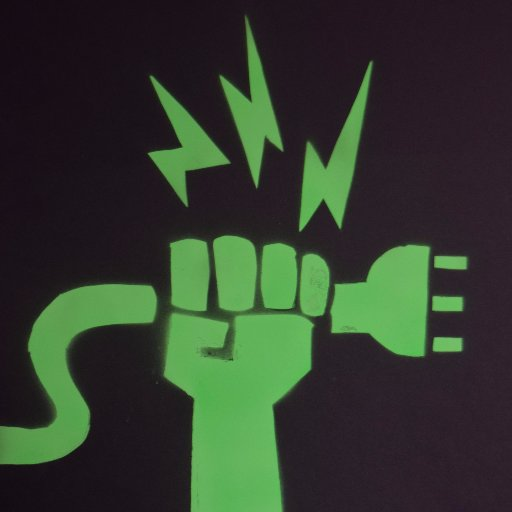
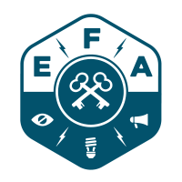

Presentación Jornada Asociaciones ETSIIT
INTERFERENCIAS
http://interferenciasenlared.tumblr.com/
interferencias@protonmail.com
(Twitter: @Inter_ferencias /
GitHub: @Interferencias)



¿Quiénes somos?
Interferencias es un grupo sin ánimo de lucro que pretende reunir a una serie de personas interesadas en:
- Privacidad
- Vigilancia masiva
- Derechos en Internet
- Seguridad
¿Quiénes somos?
Este grupo está asociado a la EFF y más concretamente a la Electronic Frontier Alliance para activismo estudiantil.
Nos reunimos el segundo sábado de cada mes, para pensar en formas de concienciar a la gente y organizar proyectos.
#somosruido
Nos movemos en Twitter (@Inter_ferencias) y nuestro blog (interferenciasenlared.tumblr.com)
¿Qué hacemos?
Tenemos la idea de compartir experiencias, hacer mesas redondas y participar activamente en la defensa de los derechos en Internet y la privacidad.
Queremos escucharte, y hacerte escuchar a los demás.
Aprende a usar el sistema operativo de Snowden
Hemos programado un taller de anonimato para aprender a proteger tu identidad e información en Internet. Te enseñamos a usar TAILS, TOR y otras herramientas.
El miércoles 14 de Diciembre por la mañana en la ETSIIT ¡Apúntate!
"Decir que no te preocupa la privacidad porque no tienes nada que esconder es como decir que no te preocupa la libertad de expresión porque no tienes nada que decir."
Edward Snowden